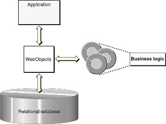

The
Enterprise Objects Advantage
A hallmark feature of WebObjects, especially in comparison
to other solutions, is the separation of the business logic from
the database and the user interface. In WebObjects, you put the
business logic in the enterprise objects ( Figure 3-4).
Figure
3-4 Implementing business logic in enterprise
objects

Another approach ( Figure 3-5) is to implement business logic in the web or desktop application.
The WebObjects approach betters this approach in the following ways:
- It
offers greater reuse. In WebObjects, you code your business
logic once, and each application that accesses your database can
use it. You don't have to recode your business logic into each
screen or web page.
- It's more maintainable. With WebObjects,
you don't have to duplicate your business logic. Thus you can
easily make substantial changes to your rules without resorting
to finding and fixing every affected page in every affected application.
You can also easily track changes to your schema.
- It improves data integrity. In WebObjects,
you don't need to rely on all application developers to implement
the business rules correctly. If one application has an error, it is
less likely to corrupt your database.
- It scales better. In WebObjects, you
can improve your application's performance without having to provide
your users with faster systems. Instead, you can simply move some
computation-intensive processing to fast server machines.
Figure
3-5 Implementing business logic in the
user interface application
Another approach ( Figure 3-6) is to implement your business rules in the database-with stored
procedures, rules, constraints, and triggers, for example. The WebObjects
approach betters this approach in the following ways:
- It
offers improved interactivity. If you implement your
business rules in the database, you need to make a round trip to
the database every time the user performs an action. Alternatively,
you can batch up database changes, which prevents the user from receiving
immediate feedback. In WebObjects applications, changes immediately appear
in the user interface, but you access the database only when saving
these changes or fetching objects.
- It improves back-end portability. Database
vendors all have different ways to implement logic. If you have
to support more than one database and you're using WebObjects,
you don't have to implement the logic multiple times and thus
suffer maintenance problems.
- Java is a good development language. With
WebObjects, you program in Java, an industrial-strength language
designed from the ground up to be object-oriented. The programmable
variants of SQL usually have some object-oriented features but are basically
procedural languages.
Figure
3-6 Implementing business logic in the
database
© 2001 Apple Computer, Inc.